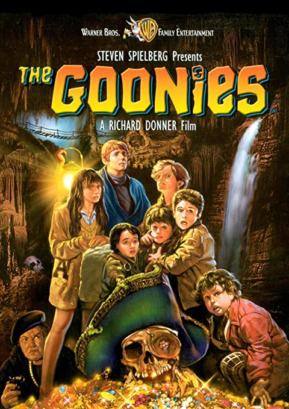

 Los Goonies (título original: The Goonies) es una película estadounidense de aventuras de 1985 dirigida por Richard Donner y escrita por Chris Columbus, basada en una historia de Steven Spielberg. Fue producida por Steven Spielberg, junto a Donner, Harvey Bernhard, Kathleen Kennedy y Frank Marshall. La película relata el viaje de un grupo de niños amigos en busca de un tesoro perdido, y se ha convertido en una de las películas de culto de los años 1980. La idea de hacer la película fue de Steven Spielberg, que, ocupado con otros éxitos, cedió la dirección de la producción cinematográfica a Richard Donner.1 Él filmó la película siguiendo el orden cronológico, para que eso ayudase a los jóvenes actores. Quiso también que los actores improvisaran mucho; según sus palabras: "Ellos tenían buenas ideas y yo era el primero en oírlas. Improvisamos mucho, eran capaces de meterse en sus personajes y se convertían en un grupo unido. Eran maravillosos. Empezaron a ser esas personas. Había ocasiones que parecía que no estábamos trabajando. Si eso no sucedía en ellos de forma instintiva, sabía que algo andaba mal." Para conseguir una reacción más natural de sorpresa al ver el barco pirata por primera vez, Richard Donner explica: "Nunca dejé que los chicos vieran el barco. Se les prohibió la entrada en el plató desde el primer día de su construcción. El día en que ellos entran en escena, saliendo disparados y cayendo al agua, se giran y ven el barco por primera vez. Los traje a todos de espaldas. Todos sabían lo que iba a aparecer, pero no tenían ni idea de lo que iban a ver. Y así, en la película, cuando ellos se giran y ven el barco por primera vez, sus reacciones son reales". El barco fue construido a escala real. Al terminar el rodaje fue ofrecido a quien le pudiera interesar, pero al no aparecer nadie interesado, acabó siendo desmontado. El 5 de abril de 2014 Donner anunció que se rodaría una segunda parte con todo el reparto original,2 algo que finalmente no se realizó.